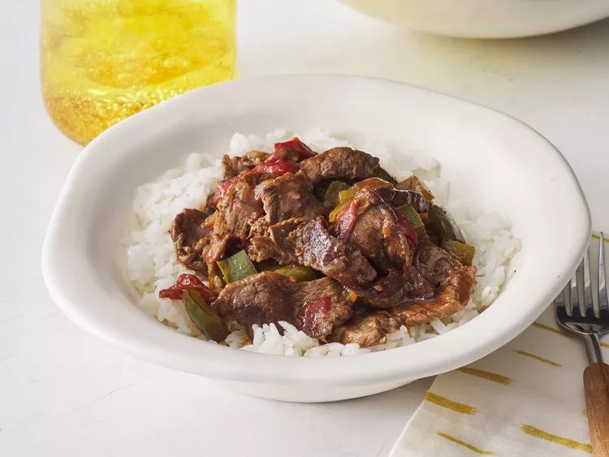

Pepper Steak

Description
This crockpot pepper steak recipe is very tender and flavorful and is one
of our family's favorites. It's great to make ahead of time in the slow
cooker and then serve over rice, egg noodles, or chow mein.
Ingredients
- 2 pounds beef sirloin, cut into 2 inch strips
- ¾ teaspoon garlic powder, or to taste
- 3 tablespoons vegetable oil
- 1 cube beef bouillon
- ¼ cup hot water
- 1 tablespoon cornstarch/li>
- ½ cup chopped onion
- Seasonings and herb
- 2 large green bell peppers, roughly chopped
- 1 (14.5 ounce) can stewed tomatoes, with liquid/li>